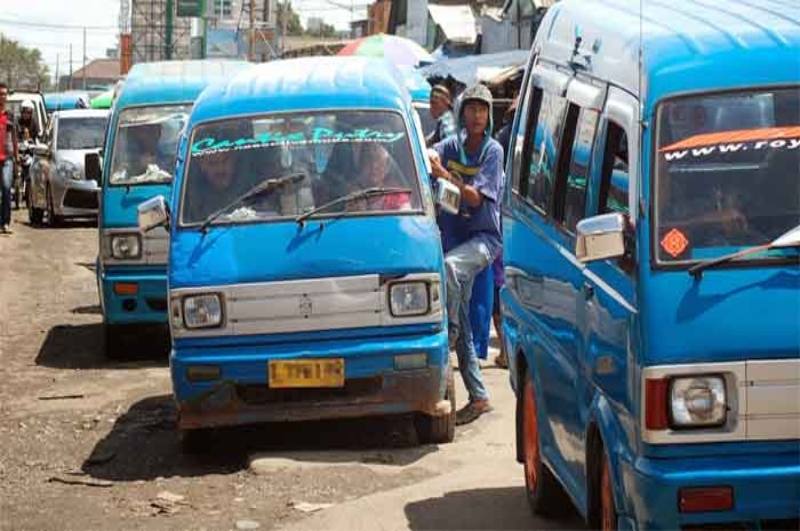
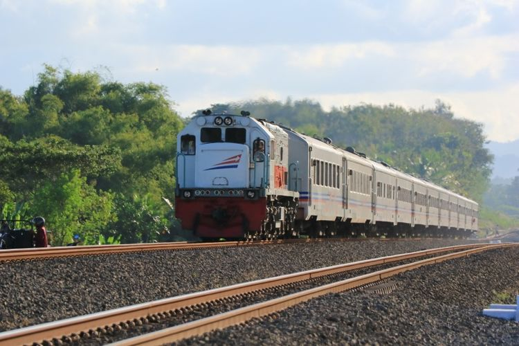
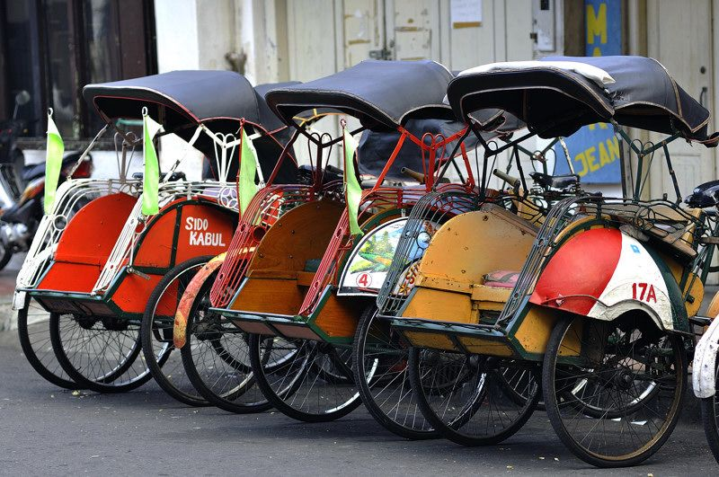

|

AngkotSebuah transportasi umum dengan rute yang sudah ditentukan. Tidak seperti bus yang mempunyai halte sebagai tempat perhentian yang sudah ditentukan, angkutan kota dapat berhenti untuk menaikkan atau menurunkan penumpang dimana saja. |

Kereta ApiSarana perkeretaapian dengan tenaga gerak, baik berjalan sendiri maupun dirangkaikan dengan sarana perkeretaapian lainnya, yang akan ataupun sedang bergerak di jalan rel yang terkait dengan perjalanan kereta api. |

BecakSuatu moda transportasi beroda tiga yang umum ditemukan di Indonesia terutama di Lebak,Banten dan juga di sebagian Asia. Kapasitas normal becak adalah dua orang penumpang dan seorang pengemudi. |